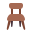

Akhir bukuท้ายเล่ม
Glosari
อภิธานศัพท์
Semua perkataan: 46, disusun mengikut abjadคำศัพท์ทั้งหมด 46 คำ เรียงตามตัวอักษร
| Rumi | Jawi | Maksudความหมาย | Pelajaranบทที่ |
|---|---|---|---|
| abang | ابڠ | พี่ชาย | 7 |
| اديق | น้อง | 7 | |
| ayah | ايه | พ่อ | 7 |
| azan | اذان | การอะซาน (เรียกละหมาด) | 4 |
| beg | بيݢ | กระเป๋า | 8 |
| bermula dengan | ขึ้นต้นด้วย | 4 | |
| buku | بوکو | หนังสือ | 4 |
| dahi | داهي | หน้าผาก | 5 |
| datuk | داتوق | ปู่ ตา | 7 |
| doa | دعا | ดุอาอ์ คำขอพร | 4 |
| gigi | ݢيݢي | ฟัน | 5 |
| guru / cikgu | ݢورو / چيقݢو | ครู | 8 |
| haji | حاجي | ฮัจญ์ | 9 |
| hidung | هيدوڠ | จมูก | 5 |
| ايبو | แม่ | 7 | |
| Islam | اسلام | ศาสนาอิสลาม | 4 |
| jari | جاري | นิ้ว | 6 |
| Kaabah | کعبه | กะอ์บะฮ์ | 4 |
| kakak | کاکق | พี่สาว | 7 |
| kaki | کاکي | เท้า ขา | 5 |
| kelas | کلس | ห้องเรียน ชั้นเรียน | 8 |
| keluarga | کلوارݢ | ครอบครัว | 7 |
| kepala | کڤالا | ศีรษะ หัว | 6 |
 kerusi | کروسي | เก้าอี้ | 8 |
| lima | ليما | ห้า | 9 |
| masjid | مسجد | มัสยิด | 4 |
| mata | مات | ตา | 5 |
| meja | ميجا | โต๊ะ | 8 |
| mulut | مولوت | ปาก | 5 |
| murid | موريد | นักเรียน | 8 |
| nabi | نبي | นบี ศาสนทูต | 4 |
| nenek | نينيق | ย่า ยาย | 7 |
| ڤينسيل | ดินสอ | 8 | |
| perut | ڤروت | ท้อง | 5 |
| puasa | ڤواس | การถือศีลอด | 9 |
| Quran | قرءان | อัลกุรอาน | 4 |
| rambut | رمبوت | ผม | 5 |
| rukun | رکون | หลักการ | 9 |
| saya | ساي | ฉัน ผม หนู | 7 |
| sekolah | سکوله | โรงเรียน | 8 |
| solat | صلاة | การละหมาด | 4 |
| syahadah | شهادة | การปฏิญาณตน | 9 |
| tangan | تاڠن | มือ | 5 |
| telinga | تليڠا | หู | 6 |
| wuduk | وضوء | การอาบน้ำละหมาด | 4 |
| zakat | زکاة | ซะกาต | 4 |